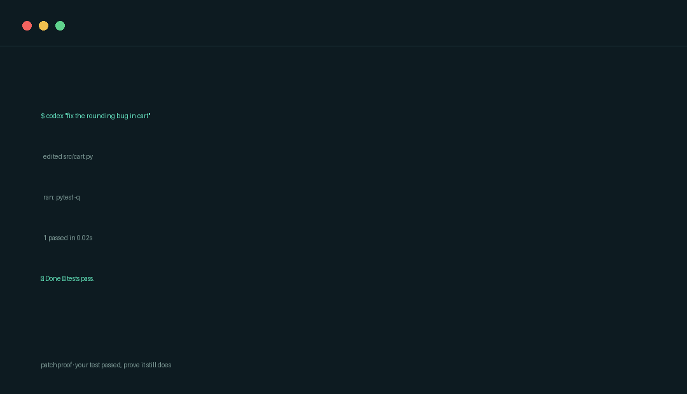
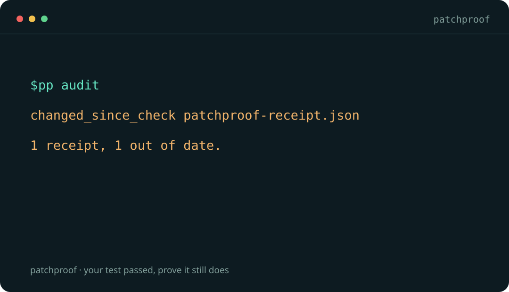

Claude Code · Codex
CLAUDE.md and AGENTS.md, the two files most hosts now share.
An agent edits your code, runs the tests, and says it worked. Two hours and three edits later, that green check is a claim about bytes that no longer exist. patchproof records the command, the exit code and the fingerprints of the files it watched — and tells you the moment the result stops describing your code.
# one command. no flags. no config.
$ pp verify -- pytest -q
CHECK PASSED. 24 watched files unchanged.
# three edits later, in CI or before a merge
$ pp audit
changed_since_check patchproof-receipt.json
1 receipt, 1 out of date.No account, no API key, no telemetry, nothing uploaded. Fails CI when the code moved.


Real output from pp verify and pp audit on a scratch project. Why a stale check is not a failed test →
An agent runs the tests, they pass, and it says so honestly. Then the work continues — a follow-up edit, a second agent, a quick fix before the PR — and the sentence keeps its old meaning while the code underneath it changes.
patchproof is one thing: it keeps the evidence attached to the exact bytes it describes, and tells you the moment those bytes move.
No config file, no watch list to maintain by hand, no service to sign up for. If you can run your tests, you can run this.
pipx install patchproofPython 3.11+. Standard library only — no dependencies are pulled in.
pp verify -- pytest -qWatches your source and test trees plus dependency manifests by default, runs the command, prints one sentence, writes patchproof-receipt.json.
pp auditRe-checks every receipt against the current files and exits nonzero if any of them went stale. This is the line that belongs in CI.
The demo builds a tiny calculator, catches a genuine bug, fixes it, records a passing test, and then edits the code again so you can watch the pass go stale. It only touches its own fixture folder.
# from the PatchProof source folder, Python 3.11+
python scripts/demo.py
# → DEMO=/…/outputs/demo-xxxx/index.htmlpp records commands, not models. One command teaches your host to record its checks in the file it actually reads — your existing instructions are appended to, never replaced.
pp agents install claude codex cursor windsurf aider copilot cline roo geminiCLAUDE.md and AGENTS.md, the two files most hosts now share.
Editor rule files, including Cursor's .mdc with alwaysApply: true.
CONVENTIONS.md, Copilot instruction files, and GEMINI.md.
Most badges are decoration. This one is a picture of a receipt: it reads up to date only while the watched files still match the run, and flips to out of date when they move. A failing check publishes a failing badge rather than leaving the last green one in place.
- uses: Parthiv-kota/patchproof/badge@v0.2.0
with:
command: pytest -qRuns the check, renders the badge, commits it to a patchproof-badges branch — and only when it changed.
The job also exposes state and badge-url outputs, so you never assemble a URL by hand.
It fails the build, too. The verify action is the gate; the badge action is the evidence. Use both, or use the badge one alone and let a red badge do the arguing.
PatchProof ships three Codex skills. They guide the model; they do not grant permissions it would not otherwise have, and they never publish, message or deploy on their own.
Reads the change and the code it touches, then reports concrete regressions with a triggering input, not a list of worries.
Makes a focused correction and checks the relevant behaviour — without deleting the test that caught the bug.
Summarises what changed, what actually ran, and what is still uncertain, in language a maintainer can act on.
Bring your own model. AI review and fixes use your Codex account, tools and usage allowance. PatchProof does not bundle a model, a key, or free AI access — and its Python helpers work with no AI at all.
It means one recorded command exited zero and the watched bytes are unchanged. It does not mean the code is correct, secure, or well covered.
No. An agent host such as Codex performs AI-assisted edits, following the bundled skills. The recorder runs the command you name, and the viewer only compares fingerprints. None of them edits your source on its own.
The helpers contain no network client and the viewer has no upload endpoint — it hashes selected files in the browser and keeps the result in memory. Your chosen check command may use the network, and your AI host's data policy applies separately when it reads your project.
No. Commands run with your normal account permissions and can modify files or reach the network. Read the command before you record it, and keep secrets out of arguments — arguments are stored in the receipt.
Sometimes you should. A receipt is for the case where you cannot — the machine is different, the dependency is gone, the reviewer is remote, or you simply need to know whether the result you were shown still describes the code you were given.
No. Ponytail inspired the focused-plugin format. PatchProof's code, skills and symbol were authored separately, and its purpose is keeping check evidence tied to watched files.
Then edit a file and run pp audit. If it says the check is out of date, you have just found the thing this tool exists for.